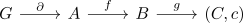

exact sequence of sets
Definition
Let

be a sequence in category set , where
- $G$ is a group
- $A,B$ are sets
- $(C,c)$ is a pointed set
Then this sequence is said to be exact if a) $G$ acts on $A$, such that
\begin{align*}
\partial[g] = g \cdot \partial[e]
\end{align*}
b) the map $f: A \rightarrow B$ is set theoretically given by the orbital collapse c) an element $b \in B$ maps to $c$ if and only if there exists a fibre $a \in f^{-1}[b]$
moral upshot:
- the map $G \rightarrow A$ is \(G\)-equivariant
- the map $A \rightarrow B$ is set theoretically the collapse
- the map $B \rightarrow C$ is given as kernel in pointed set